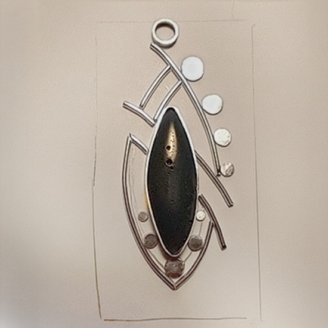

Wood is a fantastic medium for earrings and necklaces! Wooden jewelry is extremely lightweight, compliments all skin tones and hair colors, can be worn with a range of looks from chic and elegant to boho-casual.
All of my wooden jewelry designs, concepts, and processes are 100% original, and I aim to create a diverse range of styles and interests that lend to unique yet elegant individualism and self-expression. My design inspiration is rooted in exploring the emotional mechanics of human perception, understanding why specific sounds, movements, colors, and forms resonate with us and translating those insights into visual forms.
 Different Types and Styles of Wooden Jewelry
Different Types and Styles of Wooden Jewelry


Cubic Zirconia Wooden Jewelry
I love the combination of sparkling cubic zirconia and light-weight wooden earrings and necklaces, so I developed a unique look and method to set cubic ziroconia stones into wood, similar to how stones are set into metal pieces of jewelry!
Free Stone Wooden Jewelry
Incorporating various stones and glass beads can enhance the organic hardwood tones and natural patterns within the grain. The contrast between smooth, polished elements and textured wood creates a harmonious interplay that adds depth, movement, and expressive character to each piece. I use high quality surgical steel hooks for dangle earrings, however I am more than happy to switch them out for sterling silver or titanium hooks for specific needs!


Wooden Stud Earrings
These unique stud earrings are my own creation in both visual design and how they are made and constructed, combining original wooden setting designs with natural stones, shells, and glass centers. Stud earrings sizes range from very small to large. All stud earrings are hypoalergenic using high quality titanium posts (Grade 1, ASTM F67) with a silicone backing.
Wooden Jewelry with Embedded Stones
Including natural stone, shell, and glass cabochons set directly into the wood creates a design that highlights the vibrant color of each cabochon while the wood visual balance through design, color and texture, and comfortable lightness for all-day wear. I use high quality surgical steel hooks for dangle earrings, however I am more than happy to switch them out for sterling silver or titanium hooks for specific needs!


 My Wooden Jewelry Process
My Wooden Jewelry Process

Using pencil and paper is my favorite way to design jewelry. Although I appreciate the power of technology and require it for my work, my personal feeling is that designing using pencil and paper provides a more natural and free perspective. When designing jewelry I aim to incorporate a diverse range of styles and interests that lend to unique yet elegant individualism and self-expression. I especially love combining opposites such as sharp confident edges with soft curves into a single design. I find inspiration from many things, but mostly find design inspiration through conceptual patterns with movement and meaning often found in nature and abstract art.

After designing, it's time to prep the wood and cut! Cherry, Maple, and Padauk are the primary species I use for jewelry, but I've experimented with at least eighteen additional tree species including Bloodwood which was a particular favorite since it smells like roasted coconut when burned! The wood species I use must have the perfect combination of uniform strength, density, hardness, "cuttability", and natural beauty. All of my jewelry designs are put through a series of tests to ensure strength and integrity for daily wear.

I love my K40 laser cutter! This particular machine was not an "open it up and turn it on" machine and I only recommend it to those who are interested in learning about laser cutters and are up to the task of fixing several problems since these cutters usually never arrive in working condition. It took a few months of research, fixes, modifications, upgrades, rewiring, cooling system development, and help from online groups and local experts to start making jewelry! Thank you to Matt at The Make Space in State College for all of your knowledge and advice, and Paul for your help in diagnosing my x-axis issue! I continue to explore upgrades and modifications to optimize the cutter for making jewelry. When all is ready to go I use two different software programs to translate my designs into a language that the laser cutter understands, throw on protective eyewear, and the cutter does the rest!

Constructing jewelry and selecting the perfect stone for the specific design and wood species combined is one of my favorite parts of the jewelry making process! Whether it's setting cubic zirconia into its wooden design, selecting stones and constructing stud earrings, or matching the perfect stone bead to a dangle earring design, each step and piece of jewelry is created with love and care!

Thank you for visiting my website! I started Claire Lorts Designs in 2020 and primarily focus on designing and creating wooden jewelry. I also enjoy sterling silver jewelry design and lapidary work (finding, cutting, shaping, and polishing stones for jewelry) using historic iron slag and Fordite, pyrography (wood burning art), and wood chip carving. I live in Central Pennsylvania with my husband and cat, and enjoy visiting family in Michigan and Nevada! Please do not hesitate to contact me with any questions, and make sure to check out the FAQ section below!
 Work I do For Fun
Work I do For Fun


Jewelry/Key Displays & Mirrors
In addition to creating jewelry, I enjoy pyrography (wood burning), painting,
and working with wood as a canvas. Prior to making jewelry, I spent some time creating work that could be mounted on a wall and
served as a way to hang jewelry or keys on hooks. These wooden pieces were created using a scroll saw and finished using pyrography
and acrylic paint. I also created painted wooden pieces that incorporated a mirror, with various designs surrounding and overlapping the mirror component.
 FAQ — Wooden Jewelry
FAQ — Wooden Jewelry
Caring for your wooden jewelry.
Part of the beauty of my wooden jewelry is that it's natural, untreated wood. Every single design and species of wood used to make jewelry are put through a series of short and long-term tests to ensure that they are structurally sound for daily wear. However, any wooden jewelry made from untreated natural wood is delicate by nature and should be treated as such. Please take care to store your jewelry in a safe location while not wearing them, and do not wear them while showering or in water.
What materials do you use for earring French hooks and stud posts?
* For those with sensitive ears, I recommend either surgical steel or titanium.
I use high quality 316L grade surgical steel French hooks, however if you require a different material I also carry titanium (Grade 1, ASTM F67, unalloyed), 925 sterling silver, 925 gold plated sterling silver, or medical grade PC plastic (metal free). If you would like any of these alternative options (no extra charge), please indicate your preference in a message at checkout.
I use stainless steel stud posts with stainless steel butterfly backings, however if you require a different material I also carry titanium (Grade 1, ASTM F67, unalloyed) and acrylic posts. If you would like any of these alternative options (no extra charge), please indicate your preference in a message at checkout.
Is the wood you use treated?
All of the wood I use is untreated and 100% natural and solid!
 Art Shows
Art Shows

I am thrilled to have participated in the July Central Pennsylvania Festival of the Arts in State College PA for the past 3 years and look forward to applying to participate each year in the future! Please check my Instagram Page @claire_lorts_designs for updates on upcoming shows and events!
Past Shows:Central Pennsylvania Festival of the Arts 2023-2025, Ann Arbor State Street District Art Fair (Ann Arbor, MI) 2024, Lewisburg Summer Arts Festival 2023-2024, Eagles Mere Arts & Crafts Festival (Eagles Mere, PA) 2022-2023, Mifflinburg Christkindl Market (Mifflinburg, PA) 2021, Winter Craft Market (State College, PA) 2024.
 Galleries & Shops
Galleries & Shops 

My jewelry is available at several galleries and shops throughout the year including the Gallery Shop in Lemont PA, the Makery Market in State College PA, Standing Stone Coffee Company in Huntingdon PA. Please stop by and support our local businesses if you're looking for unique, hand-made, local gifts! There's always a great variety of items available that changes often throughout the year!

I mostly create sterling silver necklaces that often focus on rare, historically significant, repurposed and unusual materials that have an intriguing story to tell including Pennsylvania Slag Stones from 19th century iron furnaces, and Fordite from overspray paint buildup in automotive factories. I personally hunt for each raw slag piece throughout PA, and purchase large chunks of Fordite from individuals in the Detroit area who have found them in dump sites or abandoned factories. After acquiring raw materials, I cut, shape, polish and finish each stone using lapidary techniques then use the characteristics of the final piece to design and create its sterling silver setting (see more about my process below!)
 Making Iron Slag Jewelry
Making Iron Slag Jewelry

Finding Slag
The first step in creating slag jewelry is hunting for it!
Prior to looking for slag, I make sure to obtain permission from the curator or land owner.
Slag was created and is found surrounding the 19th century cold blast iron furnaces, and hunting for the perfect piece is often an adventure.
Slag was heavy, so workers often dumped it in nearby pits and streams. These are the locations where most slag is found.
The best pieces of slag for jewelry have high density (more like glass, with no pores or holes) and are blue with variations in blues and whites.

Cutting Raw Material
After finding a piece of slag with the ideal combination of color, texture, and density, I cut it into slabs using a
trim saw to identify sections containing unique features and patterns.

Shaping Cut Slabs
Once a raw slab is created, I use a set of lapidary wheels to grind/shape the slab to the desired shape, then use a series
of polishing wheels to smooth the surfaces and bring out details and characteristics of the stone. Finally, I use a polishing compound to finish
the stone.

Creating a Design
I always finish a stone prior to designing. That way, I can use the stone's unique shapes, features, colors, and characteristics
to design a pendant. I start with pencil and paper, and once happy with a design, fabricate the necessary sterling silver components
for soldering.

Soldering the Design
Once the sterling silver components are fabricated and set into place, I use soldering techniques to join all pieces including
a bezel wire, depending on how the stone will be set into the pendant. Once soldered, I pickle and clean the piece in addition to
removing and smoothing rough edges and excess silver.

Finishing the Piece
Further finishing and polishing are accomplished using radial bristle disks, polishing paper, and finally polishing compounds to
create that beautiful shine! Only after the pendant is completely polished and finished do I set the stone into the piece.
 About Historic Iron Slag in PA
About Historic Iron Slag in PA


The Pennsylvania Slag Stone, or Slag Glass, is a beautiful artifact of the famed iron furnace era of the 18th and 19th centuries. Throughout the state, iron ore was mined and converted into pig iron through the process of smelting in massive stone furnaces. The pig iron was then sold to forges in locations such as Pittsburgh for further refinement into steel, and often hammered into wrought iron in local forges prior to shipment. The byproduct of the iron ore smelting process was known as “slag” which furnace workers simply discarded as waste. Once cooled and solidified, it had a blue/green glassy or stone-like appearance.
PA Slag varies greatly in color including solid to variegated rich blue and green, black, gray, and even purple. Although PA Slag Stones are considered glass due to their composition, often possessing a dense transparent appearance, some slag is opaque and porous with a sponge-like texture. Each stone’s color and texture is a result of the heating and cooling processes, along with the chemical composition of the slag after separation from the iron. The composition of PA Slag varies but is primarily composed of silicon, calcium, sulfur, magnesium, aluminum, manganese, iron, and often several other elements.
Pennsylvania is not the only location to have slag stones with similar history. In fact, one of the first known origins and uses of slag was in Greece during the Bronze Age (3300-1200 BC) where slag from copper foundries was used in jewelry and ceramic pieces. Slag from past iron ore charcoal blast furnaces in Michigan, Sweden, and Tennessee are well known for their local historical significance and beauty, and are celebrated as semi-precious gemstones often featured in jewelry.